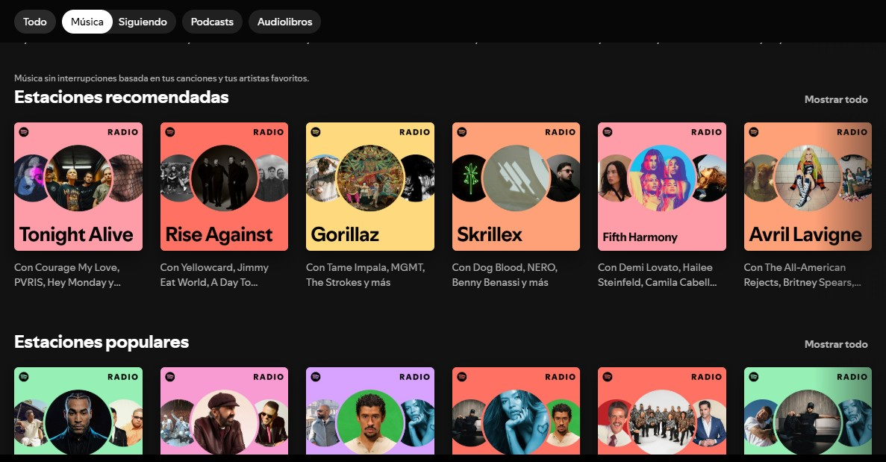
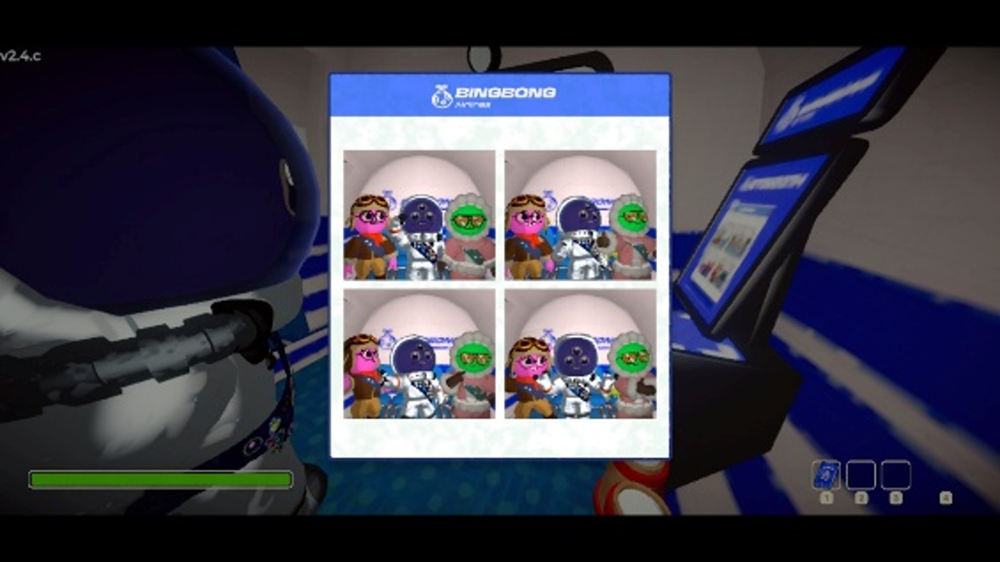
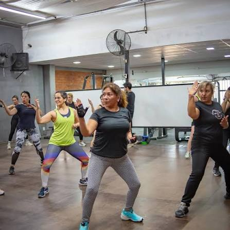

🎧 Música
La música siempre está presente en mi día a día. Ya sea mientras
estudio, programo o simplemente descanso, siempre encuentro una
canción para cada momento. Es una de las formas en las que me
concentro, me relajo y recargo energías

🎮 Videojuegos
Disfruto jugar videojuegos en mi tiempo libre.
Actualmente uno de mis favoritos es Disney
Speedstorm, un juego de carreras que combina
estrategia, velocidad y personajes icónicos.

🥊 Fitcombat
Los sábados tienen una cita fija con el Fitcombat. Es una actividad que me permite mantenerme
activa, liberar estrés y salir de la rutina. Además de ser ejercicio, representa un espacio para
desconectarme y recargar energía para la semana.